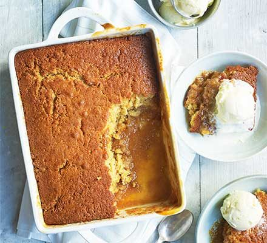

Butter Scotch Pudding

This self saucing dessert is easy to make and even easier to eat.
Ingredients:
- Dark brown sugar
- Plain flour
- Baking powder
- Butter
- Eggs
- Milk
- Golden syrup
- Cornflour
Steps:
- Preheat oven to 180 degrees celcius.
- Grease baking dish.
- Butterscotch Sauce: Whisk sugar and cornflour
in a bowl and set aside.
- Pudding Batter: Place sugar, flour and baking powder
in a separate bowl. Which to combine.
- Add butter, egg, milk and golden syrip. Whisk until mostly lump free.
- Scrape into baking dish.
- Sprinkle butterscotch sauce mixture all over the surface.
- Pour boiling water over the surface as carefully as possible.
- Transfer to oven. Bake 40 minutes or until skewer inserted into the cake
part comes out clean.
- Cut through pudding to reveal butterscotch sauce underneath.
- To serve, scoop building into a bowl then douse with butterscotch sauce.
Top with ice cream!